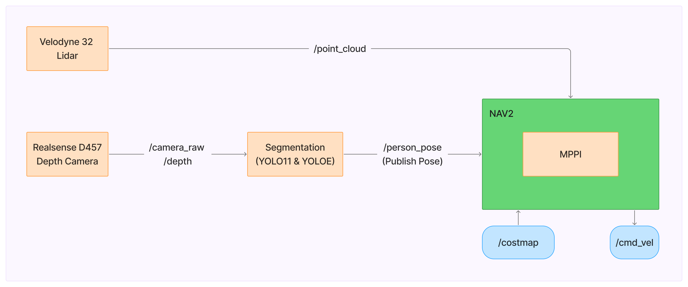
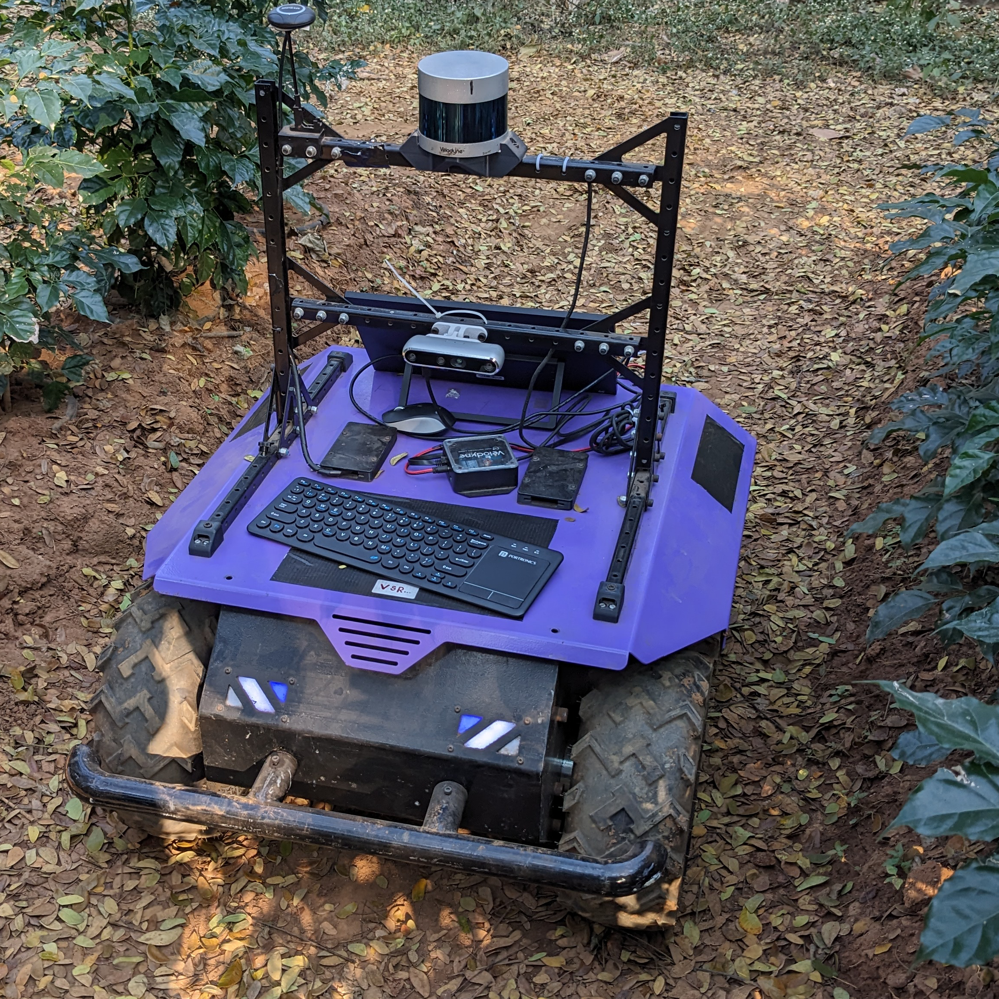
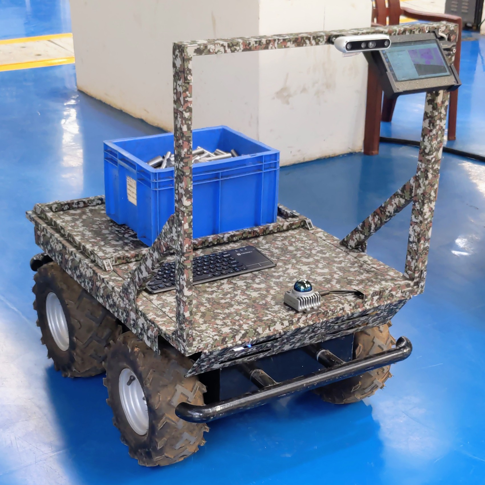

Autonomous Agricultural Robot
Follow Me Feature (with trajectory prediction) Demonstration [Sonic]
📝 Executive Summary
Implemented a Follow-Me navigation system for agricultural environments using
DEtection TRansformer (DETR) for person detection and TransReID
for person re-identification, combined with person trajectory tracking and
smart crop-row lane detection. Integrated with ROS2 Nav2 Behavior
Trees for collision avoidance, the system robustly handles partial occlusions and
enables autonomous operation in unstructured farm terrain without a pre-existing map.
Fine-tuned DETR (PyTorch) on a custom dataset (+10% mAP and maskAP) and optimized both models using
ONNX and TensorRT FP16 quantization to run on NVIDIA Jetson Orin at 18
FPS. Developed a LiDAR-camera sensor fusion pipeline (Livox Mid-360)
for precise spatial calibration and mapless field navigation. For localization, integrated FAST-LIO for LiDAR-inertial odometry, evaluated against RTAB-Map visual-inertial odometry, and selected FAST-LIO for production due to lower odometry drift; GPS data was ingested via MAVROS from a Pixhawk flight controller to support outdoor localization.
🎯 Key Features
- Follow-Me System: DETR + TransReID for robust person detection & re-identification under partial occlusions.
- Person Trajectory Tracking: Real-time trajectory prediction to smoothly follow the designated individual.
- Smart Crop-Row Navigation: Vision-guided lane detection with plant-guided row turning logic.
- FP16 TensorRT Optimization: Converted FP32 models to FP16 to reach 18 FPS on Jetson Orin without accuracy loss.
- Model Fine-Tuning: +10% boost in mAP and maskAP for outdoor person detection on a custom dataset.
- Nav2 Behavior Trees: Integrated collision avoidance without requiring a pre-existing 2D map.
- Sensor Fusion Pipeline: Livox Mid-360 LiDAR + RGB-D camera calibration & frame alignment.
- Unmanned Ground Vehicles: Deployed on RigBetel Labs' Diadem & Sonic platforms.
- FAST-LIO Localization: LiDAR-inertial odometry selected for production over RTAB-Map VIO due to lower drift.
- GPS Integration (MAVROS): Interfaced with Pixhawk flight controller to supplement localization with outdoor GPS data.
⚙️ System Architecture

Person Reidentification Feature Using DeTr and TransReID
🚩 Key Highlights & Challenges
Model Optimization (FP32 → FP16 TensorRT): Evaluated FP32 baseline models
initially on Jetson Orin, which struggled to deliver real-time frame rates. By quantizing both DETR
and TransReID models to FP16 precision via ONNX & TensorRT, achieved an average
inference speed of 18 FPS without sacrificing detection accuracy or
re-identification mAP (+10% outdoor mAP improvement).
Smart Lane Detection & Crop-Row Turning: Implemented a lidar-guided lane detection
pipeline using plant rows as navigation guidelines. Designed smart lane-switching logic enabling the
robot to detect the end of a row and autonomously execute turns into the next adjacent crop lane
using the plant alignment as a guideline.
Target Re-ID & Occlusion Resilience: Solved severe visual occlusions in
agricultural environments by combining TransReID feature embeddings with real-time person trajectory
tracking, preventing target identity loss when workers pass behind dense foliage or equipment.
🏞️ Diadem with sensors [Velodyne-32 LiDAR + Realsense D457 RGB-D Camera]

🏞️ Sonic with sensors [Livox Mid-360 LiDAR + Realsense D457 RGB-D Camera] mounted on it
